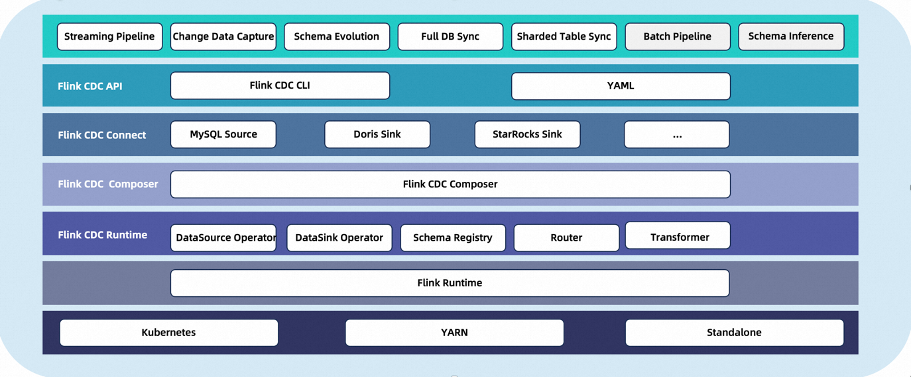
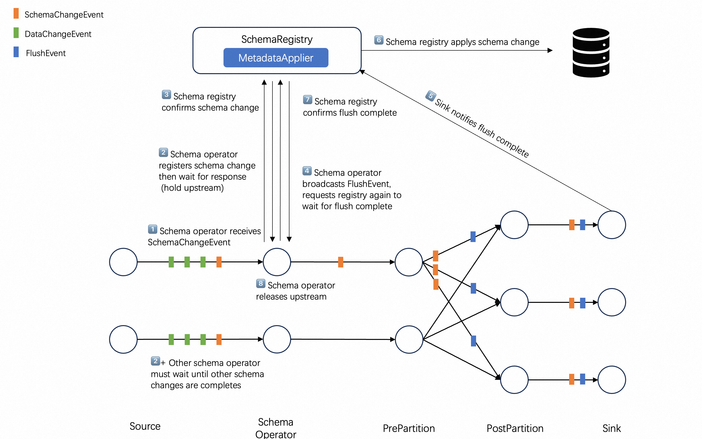

CDC Streaming ELT Framework¶
What is CDC Streaming ELT Framework¶
CDC Streaming ELT Framework is a stream data integration framework that aims to provide users with a more robust API. It allows users to configure their data synchronization logic through customized Flink operators and job submission tools. The framework prioritizes optimizing the task submission process and offers enhanced functionalities such as whole database synchronization, sharding, and schema change synchronization.
What can CDC Streaming ELT Framework do?¶

✅ End-to-end data integration framework
✅ API for data integration users to build jobs easily
✅ Multi-table support in Source / Sink
✅ Synchronization of entire databases
✅ Schema evolution capability
Core Concepts¶

The data types flowing in the Flink CDC 3.0 framework are referred to as Event, which represent the change events generated by external systems.
Each event is marked with a Table ID for which the change occurred. Events are categorized into SchemaChangeEvent and DataChangeEvent, representing changes in table structure and data respectively.
Data Source Connector captures the changes in external systems and converts them into events as the output of the synchronization task. It also provides a MetadataAccessor for the framework to read the metadata of the external systems.
Data Sink connector receives the change events from Data Source and applies them to the external systems. Additionally, MetadataApplier is used to apply metadata changes from the source system to the target system.
Since events flow from the upstream to the downstream in a pipeline manner, the data synchronization task is referred as a Data Pipeline. A Data Pipeline consists of a Data Source, Route, Transform and Data Sink. The transform can add extra content to events, and the router can remap the Table IDs corresponding to events.
Now let’s introduce more details about the concepts you need to know when using the CDC Streaming ELT Framework.
Table ID¶
When connecting to external systems, it is necessary to establish a mapping relationship with the storage objects of the external system. This is what Table Id refers to.
To be compatible with most external systems, the Table ID is represented by a 3-tuple : (namespace, schemaName, table). Connectors need to establish the mapping between Table ID and storage objects in external systems.
For instance, a table in MySQL/Doris is mapped to (null, database, table) and a topic in a message queue system such as Kafka is mapped to (null, null, topic).
Data Source¶
Data Source is used to access metadata and read the changed data from external systems. A Data Source can read data from multiple tables simultaneously.
To describe a data source, the follows are required:
Type: The type of the source, such as MySQL, Postgres.
Name: The name of the source, which is user-defined (optional, with a default value provided).
Other custom configurations for the source.
For example, we could use yaml files to define a mysql source
source:
type: mysql
name: mysql-source #optional，description information
host: localhost
port: 3306
username: admin
password: pass
tables: adb.*, bdb.user_table_[0-9]+, [app|web]_order_\.*
Data Sink¶
The Data Sink is used to apply schema changes and write change data to external systems. A Data Sink can write to multiple tables simultaneously.
To describe a data sink, the follows are required:
Type: The type of the sink, such as MySQL or PostgreSQL.
Name: The name of the sink, which is user-defined (optional, with a default value provided).
Other custom configurations for the sink.
For example, we can use this yaml file to define a kafka sink:
sink:
type: kafka
name: mysink-queue # Optional parameter for description purpose
bootstrap-servers: localhost:9092
auto-create-table: true # Optional parameter for advanced functionalities
Route¶
Route specifies the target table ID of each event. The most typical scenario is the merge of sub-databases and sub-tables, routing multiple upstream source tables to the same sink table
To describe a route, the follows are required:
source-table: Source table id, supports regular expressions
sink-table: Sink table id, supports regular expressions
escription: Routing rule description(optional, default value provided)
For example, if synchronize the table ‘web_order’ in the database ‘mydb’ to a Kafka topic ‘ods_web_order’, we can use this yaml file to define this route：
route:
source-table: mydb.default.web_order
sink-table: ods_web_order
description: sync table to one destination table with given prefix ods_
Data Pipeline¶
Since events flow from the upstream to the downstream in a pipeline manner, the data synchronization task is also referred as a Data Pipeline.
To describe a Data Pipeline, the follows are required:
Name: The name of the pipeline, which will be submitted to the Flink cluster as the job name.
Other advanced capabilities such as automatic table creation, schema evolution, etc., will be implemented.
For example, we can use this yaml file to define a pipeline:
pipeline:
name: mysql-to-kafka-pipeline
parallelism: 1